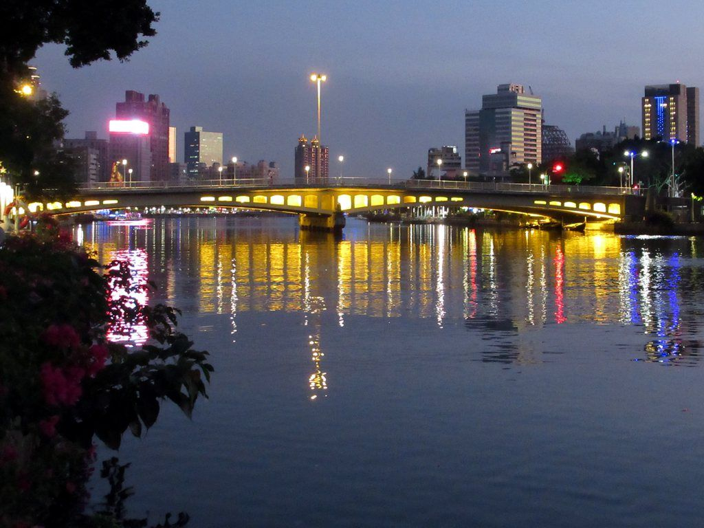
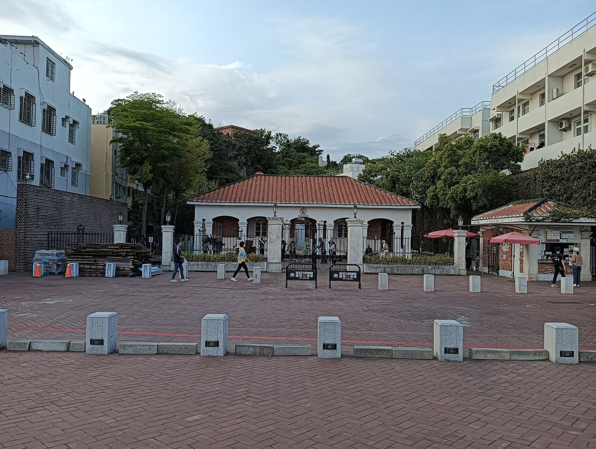
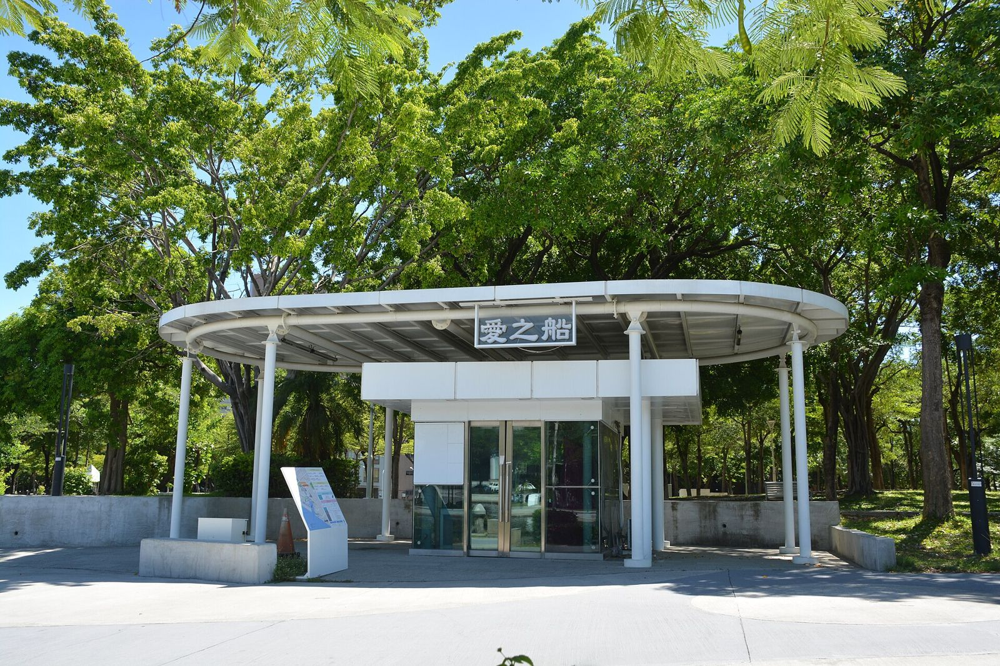

가오슝 아이허 유람선, 영국영사관 노을과 하루에 묶을까?
언덕 위 붉은 벽돌 영사관에서 해 지는 걸 보고, 강 위에서 야경으로 마무리하는 가오슝 저녁 코스예요.
게시
가오슝 아이허 유람선과 다가오(打狗) 영국영사관 노을, 하루 저녁에 둘 다 볼 수 있을까요? 영사관은 서쪽 바다가 보이는 시쯔완(西子灣) 언덕에 있고, 아이허(愛河) 유람선은 오후 3시부터 밤까지 다녀서 순서만 잘 잡으면 충분히 이어집니다. 애지선 사업을 맡고 있는 가오슝시 윤선공사와 영사관을 관리하는 가오슝시 문화국의 공식 안내를 바탕으로, 2026년 10월 기준 시간과 휴관일, 동선을 정리해봤어요.
01 · 아이허 유람선 vs 영국영사관, 한눈에 비교
| 항목 | 아이허 유람선 (愛之船) | 다가오 영국영사관 문화원구 |
|---|---|---|
| 위치 | 국빈 승선장(愛河國賓站), 前金區 河東路176號 맞은편 | 鼓山區 蓮海路20號, 시쯔완 언덕 |
| 운영 (2026년 10월 기준) | 15:00~22:00 | 월·화·목·금 10:00~19:00, 토·일·공휴일 09:00~19:00 |
| 마감 | 운항 간격은 현장 상황에 따라 조정돼요 | 매표·입장 18:30 마감 |
| 쉬는 날 | 태풍 등 기상 악화 때 운항 중지, 음력 섣달그믐 휴무(2026년 공지) | 매주 수요일(공휴일이면 개방), 기상으로 정시 휴무 발표 시 |
| 걸리는 시간 | 한 바퀴 약 25분 | 관저·사무실·오솔길까지 여유 있게 |
| 요금 | 요금은 방문 전 공식 안내를 확인하세요 | 요금은 방문 전 공식 안내를 확인하세요 |
두 곳을 묶을 때 핵심은 영사관 입장 마감(18:30)이에요. 노을은 영사관에서, 야경은 유람선에서 보는 순서로 잡으면 시간이 자연스럽게 이어집니다. 영사관이 쉬는 수요일만 피하면 평일·주말 모두 가능해요.

02 · 다가오 영국영사관 노을, 이렇게 보세요
18:30 전에 들어가기 폐관은 19:00지만 매표와 입장은 18:30에 끝나요. 해 지는 시각이 늦은 여름에는 입장 마감과 겹칠 수 있으니 일찍 들어가 두는 편이 안전해요.
해 지는 시각은 미리 확인 일몰 시각은 계절마다 달라요. 중앙기상서(CWA)의 일출·일몰 표에서 가오슝 시각을 보고, 그보다 30분쯤 먼저 도착하면 여유 있게 자리를 잡을 수 있어요.
수요일은 휴관 매주 수요일은 고적 유지보수로 문을 닫아요. 수요일이 공휴일이면 개방하고, 태풍 등으로 가오슝시가 출근·등교 중지를 발표한 날은 휴관이에요.
MRT 하마싱역 2번 출구에서 출발 MRT 오렌지선 하마싱역(哈瑪星, 옛 시쯔완역) 2번 출구에서 셔틀버스 橘1을 타고 雄鎮北門·西子灣 정류장에서 내리거나, 哨船街를 따라 걸어 蓮海路로 올라가면 돼요.
언덕 위 관저도 다시 열렸어요 문화원구 공지에 따르면 언덕 위 관저(山上官邸) 수리가 끝나 2026년 7월부터 정상 운영 중이에요. 아래 사무실과 관저는 옛 오솔길(登山古道)로 이어져 있어 계단을 조금 오르게 됩니다.
영사관은 노을 보기 좋지만 해 질 무렵엔 모기가 많으니 기피제를 챙기라는 이야기가 있어요. — 영사관에 다녀온 여행자 글을 요약했어요

03 · 아이허 유람선 탈 때 알아둘 것
승선장은 국빈 승선장 한 곳 공식 안내 기준 승선 장소는 국빈호텔 근처 愛河國賓站(河東路176號 맞은편)이고, 내리는 곳도 같아요. 영사관에서 갈 때는 MRT 오렌지선을 타고 시내 쪽으로 이동한 뒤 강변으로 걸어가면 돼요.
한 바퀴 약 25분 왕복 코스 태양광 전기 배로 中正橋를 지나 七賢橋 앞에서 돌고, 高雄橋(五福橋)를 지나 真愛碼頭까지 갔다가 승선장으로 돌아와요. 배 한 척에 36명 또는 42명이 타요.
보통 30분 간격, 현장 조정 있음 운영사 공지로는 오후 3시부터 30분 간격으로 다니고 예약 없이 현장에서 타요. 다만 출발 시간은 현장 상황에 따라 조정된다고 안내하고 있고, 사람이 어느 정도 모여야 출발했다는 여행자 이야기도 있어요.
날씨 나쁜 날은 공지부터 태풍으로 가오슝시가 휴무를 발표한 날에는 하루 운항을 멈춘 적이 있어요. 임시 변경은 고웅 애지선(高雄愛之船) 페이스북 공지가 기준이라, 비바람이 있으면 출발 전에 확인하세요.

04 · 하루 저녁 동선 예시
오후: 하마싱·시쯔완 영사관 입장 마감(18:30) 전에 도착해 관저와 오솔길을 둘러보고 바다 쪽 노을을 기다려요.
해 진 뒤: MRT로 이동 하마싱역에서 MRT 오렌지선을 타고 시내 쪽으로 옮겨 가요. 저녁은 옌청(鹽埕)이나 강변 근처에서 해결하면 동선이 짧아요.
밤: 아이허 유람선 운항은 22:00까지라 저녁을 먹고 타도 시간이 남아요. 조명이 켜진 다리와 강변을 25분 동안 돌아보고 같은 승선장에서 내리면 끝이에요.
하마싱·보얼 쪽으로 경전철을 타고 오는 법은 가오슝 경전철 타는 법에, 영사관 근처 구산 선착장에서 치진섬으로 넘어가는 배는 치진섬 페리, 구산 vs 중저우에 정리해 두었어요. 혼자 다니는 일정이라면 가오슝 혼자 여행 교통도 함께 보세요. 유람선 전후로 먹을 곳은 가오슝 맛집 지도와 가오슝 체험·관광지, 더운 날 들르기 좋은 가오슝 빙수 맛집과 옌청 쪽 옌청 우자 금귤 또우화 상세 페이지에서 고르면 돼요.
지도에서 가오슝 체험·관광지도 확인해보세요
노을과 야경 사이에 들를 곳과 근처 먹을 곳을 지도에서 미리 골라 보세요.